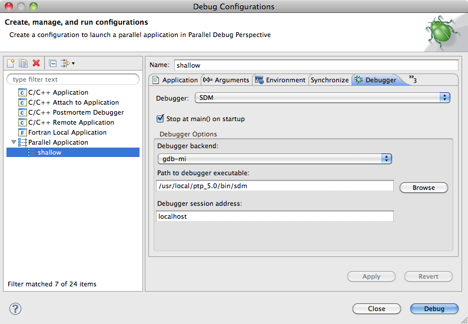
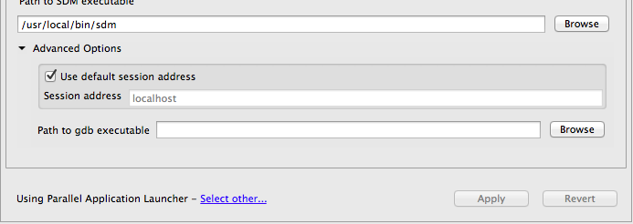
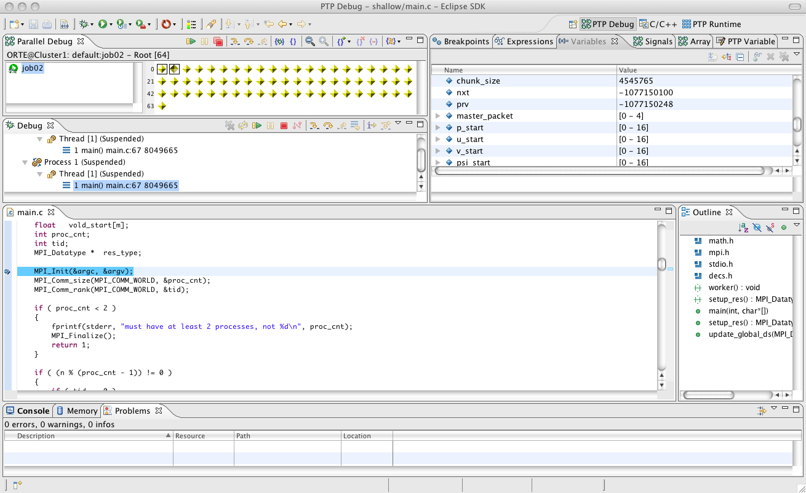
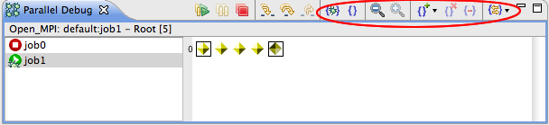
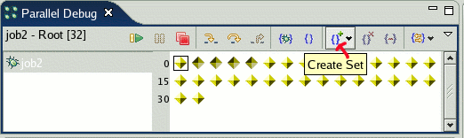
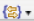
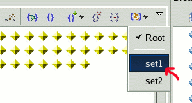
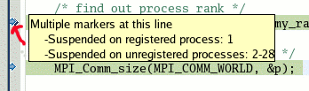
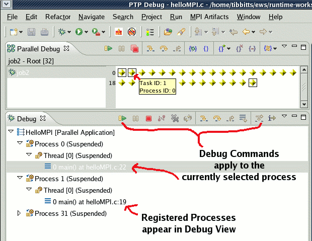

This section describes the features of PTP that enable a developer to debug a parallel application. The topics that will be covered include:
The PTP Parallel debugger has been implemented for a number of Target System Configurations (TSCs). For details and the most recent information, see the Release Notes and the PTP FAQ
For PTP 8.0, Parallel debugging is supported for
To create a debug configuration, use the following steps:

gdb-mi.
If instead you want to specify the path of the debugger, uncheck the Use built-in SDM box and make sure that the Path to SDM executable is correct for your target system.
If you are debugging on the local machine, this path should
point to the sdm executable in your Ecilpse installation's
plugins/org.eclipse.ptp.os.arch_version/bin
directory, where os.arch_version is your operating
system (linux, macosx, or aix),
architecture (x86, x86_64, or ppc),
and version number of the plugin (e.g. 5.0.0.201106080812).
If you are debugging remotely, then this path will be the path
to where the sdm executable was installed on the remote
machine.
(Optional) Advanced Options are accessed by clicking on the twistie. The advanced options allow you to set the Session address and the Path to gdb executable.

The session address is the address that the debugger will connect to when it starts, and will depend on where you are launching the application:
If you are launching onto the local machine, or onto a remote
machine using port forwarding, use localhost. (Note that
you will need to have the GatewayPorts option set to yes
in the sshd configuration file on the remote system for
this to work with port forwarding.)
If you are launching onto a remote machine without using port forwarding, then this should be the address of the local machine (the one running Eclipse). This address must be accessible from the remote machine. If your local network configuration precludes the remote machine accessing your local machine, you will need to reconfigure the connection to use port forwarding.
The path of gdb executable can be overridden if it is located in a non-standard directory, or you wish to use an alternative to gdb.
The Parallel Debug perspective is used when debugging a parallel application. The default behavior is to switch to the perspective when a debug session is launched. Experienced Eclipse users will notice that many of the views are similar to those available in the CDT Debug perspective. Please refer to the C/C++ Development User Guide for a description of these views.

This image shows a typical debug session. In the upper left of the perspective is the Parallel Debug view which shows the processes associated with the job, and allows bulk control of the processes. Underneath this is the Debug view which is the standard view showing process threads and stack frames. The source window shows a current line marker, which represents the current location of all 64 processes. In the upper right, the Variables view is showing the variables from the processes currently selected in the Debug view. There are also a number of other views available for setting breakpoints, manipulating signals, etc. Below this is the standard Outline view. At the very bottom are the standard Problems, Console, and Memory views.
A key concept for debugging parallel programs with PTP is the notion of a process set. Traditional debuggers apply operations to a single process. Parallel debugging operations apply to arbitrary collections of processes (including a single process). The PTP debugger calls these arbitrary collections process sets, and uses them as a means of simultaneously referring to one or more processes.
When a parallel debug session is first started, all processes are contained in a set, called the Root set. Sets are always associated with a single Job. A job can have any number of process sets, and a set can contain from 1 to the number of processes in a job. Process sets from the same job can contain overlapping sets of processes. This is shown in the following diagram.
Debug commands on the Parallel Debug view toolbar always apply to the current process set, which is the set of processes that is visible in the view.

PTP provides buttons on the toolbar of the Parallel Debug view to create, modify, and delete process sets, and to change the current process set.

Select the processes to be placed in the set by selecting a rectangular region with the mouse, or click the mouse and shift-click or ctrl-click to select a contiguous region, or separate processes, respectively.
For example, to select a rectangular set of processes:

Once the processes have been selected, create a process set clicking on the Create Set button  .
.

To add processes to an existing process set, select the processes you wish to add and click on
the down-arrow  to the right of the icon:
to the right of the icon:

To change the current process set, select the Change Set button

and choose from the list via the down-arrow , or
click on the button itself to cycle through the sets.

To remove processes from the current set, select the processes as described above, and click the Remove Elements button.

Select the Delete Set button to delete the current process set:

PTP has a special type of breakpoint known as a parallel breakpoint. These breakpoints differ from normal breakpoints because they apply to a set of processes instead of a single process (or thread). There are two types of parallel breakpoints:
Global breakpoints apply to all processes in any job. A global breakpoint remains in effect between job launches.
Typically, a global breakpoint is used for gaining control of an application at a predetermined point. Global breakpoints are identified by a
parallel breakpoint icon with a small G in the upper left corner:

Set Breakpoints apply only to a specific set of processes (which can include the root set) for a single job. When the job completes, these breakpoints are removed.

Set breakpoints can be one of three colors:
Green indicates the breakpoint applies to the current set.
Blue indicates the breakpoint applies to some other set than the current set, but there are overlapping processes in the sets.
Yellow indicates the breakpoint applies to some other set than the current set, and there are no overlapping processes in the sets.
To create a breakpoint, double-click on the left edge of an editor window, at the line on which you want to set the breakpoint. You can also right-click and use the Parallel Breakpoint > Toggle breakpoint context menu.

A global breakpoint is created if no jobs are selected in the Parallel Debug view. If a job is selected, the breakpoint will apply to the current set.
There are a number of ways to find out more information about a breakpoint, such as the source file, line and process set it applies to. Placing the mouse over a breakpoint will display a tooltip popup:

The Breakpoints view can be used to see all breakpoints that have been created:

Use Show > Parallel Breakpoint Set in the menu on the Breakpoints view toolbar to group breakpoints by the process set they apply to:

For example the above selection will list the breakpoints by process set:

The current instruction pointer is used to show the current location of suspended processes. In traditional programs, there is only a single instruction pointer displayed at any one time. In parallel programs, there is an instruction pointer for every process.
The PTP debugger shows one instruction pointer for every group of processes at the same location. In the following example, there are processes suspended at three different locations in the program.

The group of processes represented by an instruction pointer is not necessarily the same as a process set.
Different markers are used to indicate the types of processes stopped at that location (the different types will be discussed below):
 Registered processes marker
Registered processes marker
 Un-registered processes marker
Un-registered processes marker
Marker indicating a combination of registered and un-registered processes
Placing the mouse over an instruction pointer provides additional information about the processes suspended at that location:

Once processes of a parallel job have been suspended, it is often desirable to obtain more detailed information about an individual process. In order to do this, a particular process must first be registered. Once a process is registered it's threads and stack frames appear in the Debug view. By selecting the stack frame in this view, detailed information about the local variables can be obtained in the Variables view.
Any number of processes can be registered, and processes can be registered or un-registered at any time. To register a process, double-click its process icon in the Parallel Debug view. A black box will be shown around the process icon to indicate that it has been registered. At the same time, the process will appear in the Debug view.

To un-register a process, double-click on the same process icon. The box disappears, and the process is removed from the debug view.
The Debug view also provides a set of debug commands (resume, pause, step over, etc.) that apply to the currently selected process in the view. This provides a convenient means of controlling individual processes.
 in the Parallel Debug view. Note that the terminate icon in the Debug view
in the Parallel Debug view. Note that the terminate icon in the Debug view
 will only terminate the currently selected process in that view.
will only terminate the currently selected process in that view.